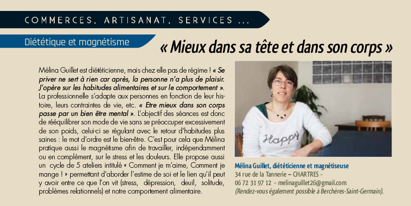

Qui suis-je ?
Mélina Guillet

Mon parcours
Née en Mayenne, confrontée à l’âge de 11 ans à un problème de santé important, j’ai eu une véritable prise de conscience sur le fait que l’alimentation est une clé essentielle de notre SANTE.
L’être humain me passionne. J‘ai commencé à 16 ans à faire un travail sur moi, pour vivre mieux, pour me connaître et pour avancer.
En passant par Tours pour aller aux sports d’hiver à 16 ans, j’ai su que j’y viendrais…
Le fait est que l’école de diététique que je voulais s’y trouvait. Je suis tombée amoureuse de cette ville. J’ai eu mon diplôme en 1999 et y ai vécu 10 ans.
Pendant 7 ans, j’ai travaillé en tant que diététicienne-téléconseillère dans un service consommateurs : j’ai beaucoup appris sur la communication, les reformulations et le conseil adapté à chaque personne.
L’envie de passer à autre chose m’a amené à réaliser des animations sur l’alimentation auprès de différents publics et malgré ma volonté de rester sur Tours, la vie m’a porté jusqu’en Eure et Loir. J’ai trouvé le travail dont je rêvais à Dreux.
En effet depuis fin 2007, je suis Chargée de prévention surpoids-obésité au Centre Hospitalier de Dreux où je réalise des animations auprès de différents publics, des consultations de prévention et de prise en charge surpoids-obésité auprès des enfants et adolescents et la coordination de différents projets tels que « la semaine du goût ».
La rencontre avec les différentes cultures a été une richesse que je n’aurais jamais soupçonnée. Je suis dans un domaine qui s’appelle la promotion de la santé, l’éducation pour la santé. L’objectif est d’accompagner les personnes vers des changements de comportement et d’informer sur les bienfaits d’une alimentation saine ainsi que la promotion de l’activité physique, sans jugement, ni dogmatisme. Ce qui leur permettra de faire des choix éclairés meilleurs pour leur santé morale et physique.
Mon père était sourcier, je l’ai souvent suivi sur le terrain jusqu’au jour où j’ai senti que je trouvais les sources aussi. Je n’ai jamais voulu utiliser mon don car je souhaitais être au clair avec moi-même et apprendre à me protéger.
"On ne voit bien qu’avec le coeur,
l’essentiel est invisible pour les yeux " ST Exupéry, extrait Le Petit Prince.
Votre diététicienne est spécialisée en prévention et éducation pour la santé
- DUT génie biologique, option diététique, IUT Tours, septembre 1999.
Info : DUT et BTS sont les deux seuls diplômes reconnus pour exercer en tant que diététicienne-nutritionniste. Ils garantissent le sérieux de la formation des professionnels qui sont diplômés.
- Le goût
- Compétences psycho-sociales des enfants
- Magnétisme et libération émotionnelle depuis 2013
- Régimes et estime de soi
Mes formations
J’ai fait une formation de géobiologie 1er niveau en 2012 et cela m’a permis de réaliser que j’avais une sensibilité développée. J’ai alors compris que si je voulais être heureuse, le seul moyen était d’ « utiliser » mon don et mes capacités pour aider les autres.
Depuis 2013, je suis une formation en magnétisme et libération émotionnelle avec Nelly Forget sur Chartres.
J’ai également créé mon activité d’auto-entrepreneur
de diététicienne-magnétiseuse en parallèle de mon emploi au CHU Dreux.
Je fais partie de
l’association Univers Santé et du groupe de travail
Alternatiba
,deux associations qui participent à différentes manifestations pour la santé de la terre et de l’humain et la lutte contre le réchauffement climatique.
Depuis l’âge de 16 ans, je travaille sur moi pour prendre soin de ma santé, toujours être au plus juste de ce que je ressens et aujourd’hui, pour mieux accompagner les personnes vers leur propre chemin.
J’ai suivi des thérapies différentes (PNL, thérapie primale, libération émotionnelle) et m’intéresse à pleins de domaines : Feng shui, Radiesthésie, Reiki niveau 1, Réflexologie plantaire ….
Aujourd’hui maman, je m’épanouis dans mon rôle de parent qui me fait beaucoup grandir.
La presse parle de moi !!!
Mes témoignages consommateurs
" J'ai rencontré Mélina pour un problème de surpoids causé par un stress au travail.Et grâce au magnétisme, j'ai pu me rendre compte qu'il fallait pour cela que je trouve la cause de mon mal être.
J'ai vraiment apprécié ses séances. "
Céline LP
" Mais quelle découverte, j'ai repris goût à la vie et sans Mélina je ne pourrais pas être totalement sereine face à mes petits bouts de chou. Je mange équilibré et je cuisine de bons repas aux enfants. "
Louiza Mb.
" Ayant des horaires décalés, j'avais de gros problèmes d'insomnie ce qui m'empêchait d'être agréable avec mes clients. Je suis allée voir Mélina et elle m'a appris à être en phase avec moi même. Son énergie positive m'a permis de ne pas m'écrouler. "
Anna P.
" Un grand merci à Mélina, qui m'a aidé dans tous les domaines.Son positivisme et son professionnalisme ont eu raison de mon enbompoint . J'étais un peu sceptique quant au mgnétisme et franchement je conseille à toute personne de tenter l'aventure, vous ne le regretterez pas. "
Pierre LC.